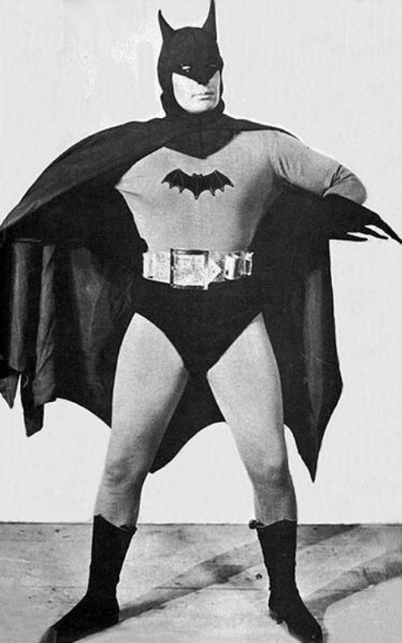
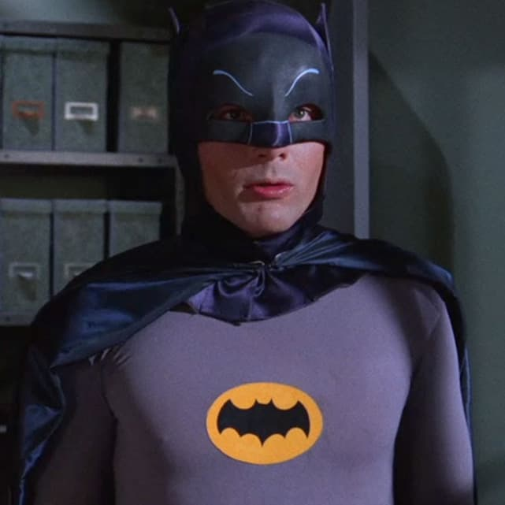
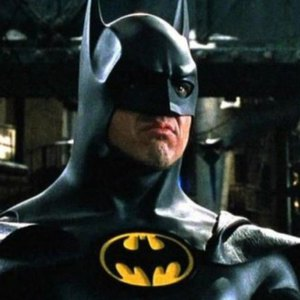
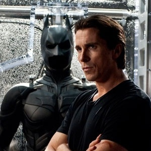
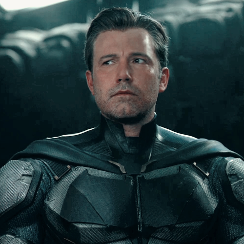

O Batman, também conhecido como Homem-Morcego, é um super-herói de quadrinhos publicados pela DC Comics. Criado pelo desenhista Bob Kane e pelo escritor Bill Finger, apareceu pela primeira vez na revista Detective Comics #27 (maio de 1939).

Lewis Wilson, o primeiro a interpretar o homem morcego, entre 1943 e 1944, Lewis fez o papel de Batman e Bruce Wayne no primeiro seriado da DC feito para o cinema.

Adam west, relembrado pelo seu famoso papel como Batman em:
Batman - O Homem Morcego(1966)
Batman e Robin(1966 - 1968)
Sendo um dos mais marcantes, Adam West ainda fez participações em diversas Séries, Desenhos Animados, Filmes, e Jogos do Batman.
Ainda é citado de forma nostalgica, mesmo após sua morte em 2017.

Michael Keaton , que marcou a infÂncia de muitos, com seu papael como Batman em:
Batman(1989)
Batman: O Retorno(1992)
Ainda sendo citado mesmo após 30 anos de sua interpretação, em memes, jogos e Filmes, e com uma aparição prevista para:
The Flash(2022).

Christian Bale, dito como o melhor ou um dos melhores atores de Batman até hoje em:
Batman Begins(2005)
Batman: O Cavaleiro das Trevas(2008)
Batman: O Cavaleiro das Trevas Ressurge(2012).
É dito de tal forma, pois conseguiu interpretar de forma espetacular ambos os lados, Tanto como Batman, como Bruce Wayne.

Ben Affleck interpretou batman durante cerca de 3 anos, e 3 filmes,
sendo eles:
Batman vs Superman: A origem da justiça.(2016)
O Esquadrão Suicida(2016)
Liga da Justiça(2017)
Acabou desistindo do papel após as refilmagens de Liga da justiça Snider Cut.